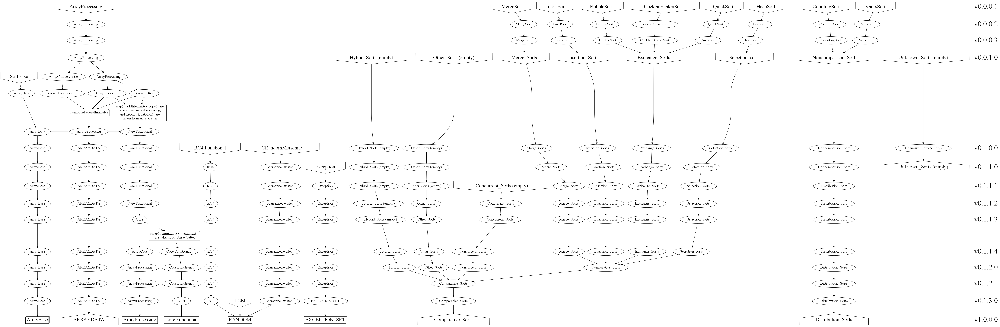

|
ALGOR 1.0.0.0
Бібліотека для обробки та сортування структур даних
|


| |
|
ALGOR 1.0.0.0
Бібліотека для обробки та сортування структур даних
|
|
| |
На відміну від інших класів, у класу ALGOR::ArrayBase найрізноманітніша та цікава історія. Його еволюція відбувалась 4 комміти поспіль і від першої реалізації він ніс трохи інший сенс свого існування...
Як відомо, з початком "Титанічного розбиття" (комміт 85698d) створювалось багато класів, а весь реалізований матеріал розділявся на розділи і переносився до того чи іншого файлу, що відповідав за потрібний розділ. А потім ці розділи почати ділитися на оголошення та реалізації. Але така схема була не дуже зручною і всі файли з оголошеннями почали об'єднуватись в один, а файли з реалізаціями в другий файл. Це призвело до того, що я зміг перекваліфікувати бібліотеку зі статичної до динамічної (що я планував с початку) і трохи краще реалізував структуру проекту. Комміт 6efeb8 став останнім об'єднуючим коммітом, після якого залишаться лише два файли сирців: оголошень та реалізацій.
Я вже планував реалізувати усі алгоритми сортування і підготував їх категоризацію. Тоді я підмітив, що усі алгоритми працюють з масивами (капітан очевидність), так чому у кожному класі прописувати приватне поле структури масиву, якщо можна реалізувати базовий клас з цим полем і просто успадковуватись від нього. Це ж займе менше місця... Так і з'явився цей базовий клас. Називався він SortingBase, мав один конструктор і поле для зберігання вказівника на структуру масиву. Це була і вся його задача...
Насправді, було пропущено один коміт між першим та другим, але у ньому замінювався лише приклад... А тепер до суті. На момент попереднього коміту 6efeb8 ArrayProcessing вже було поділено: від нього відокремився ArrayCharacteristic. На момент поточного коміту відокремився ArrayGetter. Я тоді ще не планував їх об'єднувати назад в один єдиний клас, як було раніше. І саме головне: я перейменував базовий клас із SortingBase на ArrayData. І ні, він ніяк не пов'язаний із сучасним ARRAYDATA... Історія буде поцікавіше...
Тоді я вигадав наступну схему:
А що, якщо я ці класи назад об'єднаю до єдиного класу, але тепер методи будуть не статичними і використовуватись, як функції з простору імен, а будуть повноцінними методами, для використання яких потрібно створювати об'єкт класа? Треба поекспериментувати! Але як бути з тими функціями, що використовуються алгоритмами сортування? Я винесу їх з розділу Масиву до розділу Ядра!
Так я виокремив:
Чому тоді було винесено дві останніх функції, я вже не пам'ятаю, але зараз це логічно, що тоді це було гарне рішення.
Все інше я об'єднав назад в один єдиний клас. І тоді стало зрозуміло, що я можу вчинити так само, як і з алгоритмами сортування: успадкуватись від базового класу масивів і використовувати готовий конструктор та поле зберігання вказівника на структуру масиву. Короче, я зрозумів, що створити базовий клас масиву було дуже гарною та універсальною ідеєю! Саме тому базовий клас і було перейменовано у минулому комміті, а новий клас все по старому називається ArrayProcessing. Все логічно: базовий клас зберігає вказівник на структуру масиву, тому він Data, а великий клас з методами обробки є Processing...
Остання глава з кульмінацією та поворотом сюжету. І так, базовий клас у нас є; є клас для роботи з масивами, успадкований від нашого класу; і є класи алгоритмів сортувань, що теж успадковані від нашого класу... Що ж може таке статися? А вся річ у тім, що після попереднього комміту я порівняв назви класів для алгоритмів сортувань і подумав наступне:
А чи дійсно підходить ця назва базовому класу? Було б більш логічним успадковуватись від базового класу у прямому сенсі, а не від класу, який може мати додатковий функціонал. Адже якщо клас буде називатись ArrayData, то це може означати, що там не тільки данні зберігаються, а можуть бути якісь методи їх обробки...
Цей самий сумнів я відчув, коли цю картину наклав на клас обробки масивів:
Клас ArrayData може мати якийсь функціонал, а ArrayProcessing може його поширювати...
Я міг так вчинити і залишити ті методи, що я переніс до ядра, у базовому класі, але як тоді дати доступ до функції swap? Нелогічно.
І тут я вирішив удруге перейменувати класи: базовий клас став називатися так - який сенс він, власне, і несе - ArrayBase, а ArrayProcessing став називатися ARRAYDATA. Да! Саме так! Сучасні назви не несуть нічого спільного зі старими! І все стало на свої місця... Все логічно... ArrayBase зберагіє лише готові конструктори та поле для вказівника на структуру масиву, ARRAYDATA успадковується від базового класу та поширює його методами обробки масивів, а класи алгоритмів сортувань успадковуються від базового класу, щоб могти сортувати ці масиви.
Після цього відбулось іще багато змін... Почну з менш цікаво. З розширенням кількості реалізованих алгоритмів сортувань я зрозумів, що так не зручно працювати з цими алгоритмами, як вони реалізовані зараз. Я об'єднав класи у кожній категорії в один клас, що зберігає внутрішні класи. Потім і ці класи категорій будуть об'єднані до одного класу і залишаться лише клас з алгоритмами, що працюють з будь-якими данними, та клас алгоритмів, що працює лише з int. А ті класи, які успадковувались та стали внутрішніми, тепер не успадковуються від базового класу, а зберігають сам масив та його розмір окремо від кожного, і якщо потрібно, програміст може створити об'єкт самого алгоритму і передати йому безпосередньо сам масив та розмір, а може створити об'єкт категорії та передати вказівник на структуру. Тепер успадковуються самі категорії...
Повертаємось до функцій. Як я сказав, було виокремлено 5 функцій, 4 з яких працюють тільки з масивами... Так навіщо ж їх було виокремлювати. З часом з'явились перевантаження функцій minimum (а саме ALGOR::minimum) та maximum (а саме ALGOR::maximum), з'явилась getMemoryCell (зараз ALGOR::getMemoryCell). Окрім цих, всі інші функції були пов'язані з масивами... Тоді я і їх роздів, де частина (swap, minimum, maximum та getMemoryCell) залишились ядром, а всі інші відродили самий перший ArrayProcessing у розділі масивів.
Отже, ми маємо, що сучасний ArrayProcessing немає нічого спільного з тим початковим ArrayProcessing, з яким було створено бібліотеку. Але він (початковий ArrayProcessing) не канув у Лету... Він еволюціонував у багатофункціональний ARRAYDATA. А призвів до цих змін саме базовий клас ArrayBase, який спочатку мав стати лише скороченням коду для алгоритмів сортувань. І як ми бачимо, сучасні внутрішні класи кожен власноруч зберігає масив і його размір без використаня написаного для них ArrayBase. Змінилося все. Санта Барбара нервово курить у сторонці...
